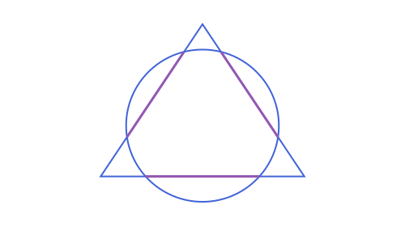
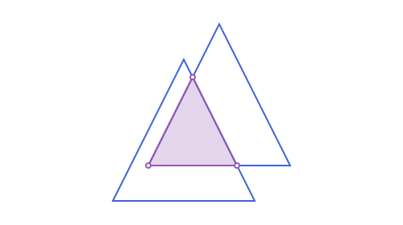
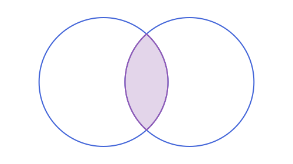
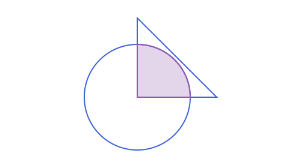
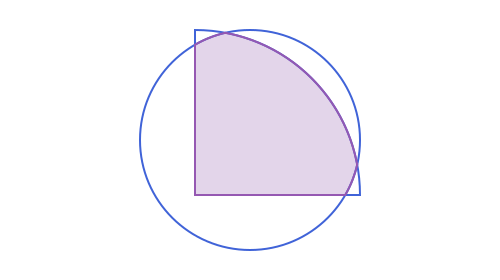
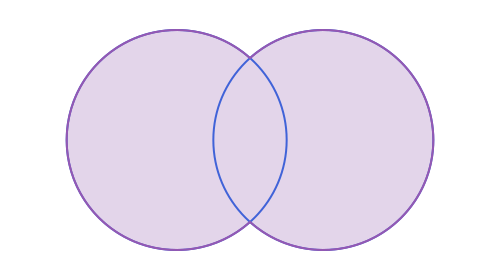
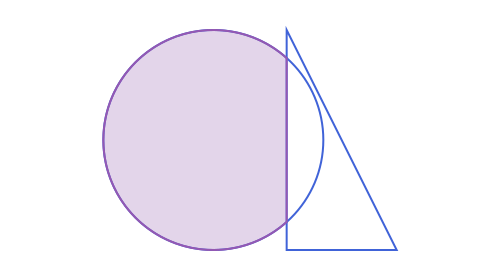
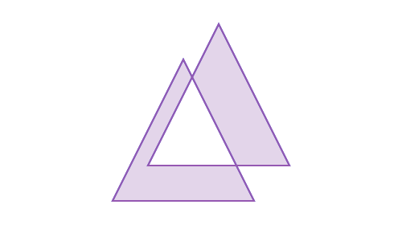

Intersections
intersection(a, b) returns the points where two objects meet, as a Vector of APPoints. The vector is empty when they do not meet, so the result is always safe to filter, map or length, and it is never nothing. The arguments can be given in either order. This page also covers region_union, region_difference, region_symdiff, overlaps, touches, is_walkable, and the N-ary forms of all three combining operations, further down in Union and difference, Symmetric difference, overlaps, and is_walkable, and Combining more than two shapes at once.
Except when one side is an APAngle2, APHalfPlane2 or APStrip2 and the other a line, segment, ray, or a conic (circle, ellipse, parabola, hyperbola) or an arc of one: those three are regions, not curves, so there intersection gives the part of the other object that lies inside the region, in that object's own type (a point, a segment, a ray, an arc, the whole object, nothing, or a Vector of pieces), not the points where a boundary is crossed. For a line/segment/ray/circle/ellipse this is a bare value unless one side is a reflex APAngle2 or a strip wide enough to be crossed on both sides; for a parabola/hyperbola (open, unlike the other conics) it's always a Vector, since even a single half-plane can split one into two disjoint pieces. See Unbounded Regions: Half-Planes, Strips & Angles, Points, Lines & Rays: Angles and Conics: Tangents, Duality & Arcs.
Also except when both sides are one of APAngle2/APHalfPlane2/ APStrip2: there intersection gives the region common to both, whichever type it collapses to (nothing, an APLine, one of the same three types unchanged, a bounded APTriangle/APQuadrilateral, or an APUnboundedPolygon2), as a bare value unless one side is a reflex APAngle2, when it's a Vector of up to 2 pieces (up to 4 if both sides are reflex, possibly with some overlap between pieces in that last case). See Unbounded Regions: Half-Planes, Strips & Angles.
Also except when one side is an APAngle2/APHalfPlane2/APStrip2 and the other a straight-sided APTriangle/APQuadrilateral/ APStraightNgon: the part of the polygon inside the region, in the tightest fitting bounded type, a bare value unless one side is a reflex APAngle2 (curved-sided polygons aren't supported yet). See Unbounded Regions: Half-Planes, Strips & Angles.
Also except when both sides are bounded and closed: an APCircle2, an APEllipse2, or any member of the APPolygon family (straight or curved). There a mode keyword picks, per side, whether it means just its own boundary curve or the filled region it encloses, the same :boundary/ :region vocabulary distance already uses. mode=(:boundary, :boundary) (the default, and what happens when mode is left out) is the boundary-crossing points above, unchanged. mode=(:boundary, :region) or (:region, :boundary) gives the part of the boundary-only side's own curve that lies inside the region side, as a Vector (0, 1, or more disjoint pieces, since the region side need not be convex). mode=(:region, :region) gives the actual overlap of the two filled interiors, also always a Vector, each piece the tightest fitting shape: APTriangle/APQuadrilateral/ APStraightNgon when every side of a piece is straight, APCurvilinearTriangle2/APCurvilinearQuadrilateral2/APCurvilinearNgon2 when any side is curved. One shape entirely inside the other comes back as that inner shape unchanged; disjoint shapes give an empty Vector. A bare mode=:region (or :boundary) is shorthand for the same choice on both sides. Two shapes that share part of a boundary edge or arc drop that shared piece, the same convention already noted above for two curves that coincide.
A side read as :boundary, and both sides together when the mode is (:region, :region), need that shape's own boundary walked in a single consistent direction, the one signed_area calls positive; a side read as :region next to a :boundary partner only needs in, never a walk. APCircularArc2 and APEllipticArc2 can only represent a counterclockwise sweep, so a shape whose boundary needs one of its arcs walked the other way raises an ArgumentError (instead of a wrong area) whenever it lands in a role that walks it. APAnnularSector2's inner arc always faces opposite its outer one, so it always raises this as a :boundary side and in (:region, :region), but works fine as the :region side next to a :boundary partner. APInterstice2 built as the curved gap between mutually tangent circles has the same underlying shape (each arc bulges away from the gap), but only in (:region, :region): it works as either side of (:boundary, :region)/(:region, :boundary), since only (:region, :region) needs a full, consistent walk of both shapes at once. Neither limitation ever touches APCircle2, APEllipse2, any straight-sided type, or a curved type with a single arc side (APCircularSector2, APCircularSegment2).
using ApolloniusWhich pairs
| Pair | Points | Notes |
|---|---|---|
| line, line | 0 or 1 | none when parallel, and also none when they are the same line |
| line, circle | 0, 1 or 2 | two points in the direction of the line; one when tangent |
| circle, circle | 0, 1 or 2 | first the point on the left going from the first center to the second |
| line, ellipse, hyperbola or parabola | 0, 1 or 2 | order not specified |
| conic, conic | up to 4 | any two of circle, ellipse, hyperbola, parabola |
| segment or ray with anything above | as above | only the points inside the segment or ray are kept |
| arc of a conic with anything above | as above | only the points on the arc are kept |
| polyline, polygon, chain, bounding box | as many as the sides cross | the points on the boundary, see below |
| angle, half-plane or strip with a line, segment, ray, or any conic or arc | not points | the part of the other object inside the region, see above |
| angle, half-plane or strip with another one of the three | not points | the region common to both, see above |
| angle, half-plane or strip with a straight-sided triangle, quadrilateral or n-gon | not points | the part of the polygon inside the region, see above |
circle, ellipse, or any polygon-family shape with another one of those, given mode | not points | the clipped curve or the overlap region, see above |
| parametric curve with a line, conic or any of the above | found by sampling | see below |
| point with anything above | 0 or 1 | the point itself, if it lies on the curve or boundary |
Two curves that coincide return an empty vector rather than infinitely many points. A tangent contact counts as one point.
c = APCircle2(APPoint(0.0, 0.0), 3.0)
l = APLine(APPoint(-5.0, 1.0), APPoint(5.0, 1.0))
intersection(l, c)2-element Vector{APPoint{2, Float64}}:
[-2.8284271247461903, 1.0]
[2.8284271247461903, 1.0]c2 = APCircle2(APPoint(4.0, 0.0), 3.0)
intersection(c, c2) # first the point above the line of centers, then the one below2-element Vector{APPoint{2, Float64}}:
[2.0, 2.23606797749979]
[2.0, -2.23606797749979]Segments, rays and arcs
A segment is a piece of a line, and a ray is half of one. intersection first finds the points on the whole line, then drops the ones that fall outside the piece. The same holds for an arc and its circle or conic.
r = APRay(APPoint(0.0, -1.0), APPoint(1.0, -1.0))
s = APSegment(APPoint(-6.0, -2.0), APPoint(0.0, -2.0))
intersection(r, c), intersection(s, c) # one point each: the other point of the line is off the ray, off the segment(APPoint{2, Float64}[[2.8284271247461903, -1.0]], APPoint{2, Float64}[[-2.23606797749979, -2.0]])
See script
using Apollonius, Luxor
import Luxor: julia_red, julia_blue, julia_green, julia_purple
import Apollonius: rotate, translate, distance, midpoint
lxm = @prepare_to_picture! width=500 height=300 margin=30 begin
c = APCircle2(APPoint(0.0, 0.0), 3.0)
l = APSegment(APPoint(-6.0, 1.0), APPoint(6.0, 1.0))
r = APRay(APPoint(0.0, -1.0), APPoint(1.0, -1.0))
s = APSegment(APPoint(-6.0, -2.0), APPoint(0.0, -2.0))
rl = APLine(APPoint(0.0, -1.0), APPoint(1.0, -1.0))
sl = APLine(APPoint(-6.0, -2.0), APPoint(0.0, -2.0))
kept = [intersection(l, c); intersection(r, c); intersection(s, c)]
dropped = [intersection(rl, c)[1]; intersection(sl, c)[2]]
end
begin
Drawing(lxm.width, lxm.height, :svg)
origin()
gsave()
setline(1); setdash("dash")
sethue("gray80")
path([rl, sl], action=:stroke, extend=200)
grestore()
sethue(julia_blue)
path([c, l, s], action=:stroke)
path(r, action=:stroke, extend=200)
sethue(julia_purple)
sethue("gray80")
sethue("white"); path(kept, action=:fillpreserve); sethue(julia_purple); strokepath()
sethue("white"); path(dropped, action=:fillpreserve); sethue("gray80"); strokepath()
finish()
preview()
endarc = APCircularArc2(c, APPoint(3.0, 0.0), APPoint(0.0, 3.0))
intersection(arc, l), intersection(arc, c2)(APPoint{2, Float64}[[2.8284271247461903, 1.0]], APPoint{2, Float64}[[2.0, 2.23606797749979]])
Two conics
Any two conics can meet in up to four points. A circle and an ellipse, for example:
e = APEllipse2(APPoint(0.0, 0.0), 5.0, 2.0)
length(intersection(e, c))4
Polygons, polylines and other composite objects
Every object made of pieces works with intersection, against any other one. A polyline, a polygon or a chain counts as the union of its sides. A bounding box is its four sides, an angle its two rays, a half-plane its boundary line and a strip its two lines. The result is the points where those curves meet, so it can hold many points, and a vertex shared by two sides is given once.
pg = APStraightNgon([APPoint(0.0, 0.0), APPoint(5.0, 0.0), APPoint(6.0, 3.0), APPoint(2.0, 4.0), APPoint(-1.0, 2.0)])
cut = APLine(APPoint(-2.0, 1.0), APPoint(7.0, 2.5))
intersection(pg, cut)2-element Vector{APPoint{2, Float64}}:
[5.764705882352941, 2.2941176470588234]
[-0.6153846153846154, 1.2307692307692308]
Two polygons give the points where their boundaries cross:
other = APStraightNgon([APPoint(3.0, -1.0), APPoint(8.0, -1.0), APPoint(8.0, 2.0), APPoint(3.0, 2.0)])
intersection(pg, other)2-element Vector{APPoint{2, Float64}}:
[3.0, 0.0]
[5.666666666666667, 2.0]
The same holds for the polygons with curved sides, such as a APCircularSector2, and for chains that mix segments and arcs.
The inside of a region is not part of its curve, so a point inside a polygon is not in the intersection of the polygon with a line that passes through it: the line meets the polygon's boundary where it enters and where it leaves. To ask whether a point is inside, use in (see Predicates).
Bounded regions: clip and overlap
Two circles, two ellipses, or two polygon-family shapes (straight or curved, in any combination) accept mode on top of the plain boundary-crossing behavior above:
tclip = APTriangle(APPoint(0.0, 0.0), APPoint(4.0, 0.0), APPoint(2.0, 3.0))
cclip = APCircle2(APPoint(2.0, 1.0), 1.5)
intersection(tclip, cclip; mode=(:boundary, :region))3-element Vector{APSegment{2, Float64}}:
APSegment([0.881966012, 0.0] -> [3.118033988, 0.0])
APSegment([3.483085376, 0.775371936] -> [2.36306847, 2.455397295])
APSegment([1.63693153, 2.455397295] -> [0.516914624, 0.775371936])
See script
using Apollonius, Luxor
import Luxor: julia_red, julia_blue, julia_green, julia_purple
import Apollonius: rotate, translate, distance, midpoint
lxm, lxo = @prepare_to_picture width=500 height=280 margin=30 begin
tclip = APTriangle(APPoint(0.0, 0.0), APPoint(4.0, 0.0), APPoint(2.0, 3.0))
cclip = APCircle2(APPoint(2.0, 1.0), 1.5)
clipped = intersection(tclip, cclip; mode=(:boundary, :region))
end
(; tclip, cclip, clipped) = lxo
Drawing(lxm.width, lxm.height, :svg)
origin()
sethue(julia_blue)
path([tclip, cclip], action=:stroke)
sethue(julia_purple); setline(3)
path(clipped, action=:stroke)
finish()
preview()mode=(:boundary, :region) kept the three pieces of tclip's own boundary that lie inside cclip, each still an APSegment. Asking for mode=(:region, :region) on two shapes instead gives the actual overlap, as a filled shape of its own:
t1 = APTriangle(APPoint(0.0, 0.0), APPoint(4.0, 0.0), APPoint(2.0, 4.0))
t2 = APTriangle(APPoint(1.0, 1.0), APPoint(5.0, 1.0), APPoint(3.0, 5.0))
intersection(t1, t2; mode=:region)1-element Vector{APTriangle{2, Float64}}:
APTriangle([3.5, 1.0], [2.25, 3.5], [1.0, 1.0])
See script
using Apollonius, Luxor
import Luxor: julia_red, julia_blue, julia_green, julia_purple
import Apollonius: rotate, translate, distance, midpoint
lxm, lxo = @prepare_to_picture width=500 height=280 margin=30 begin
t1 = APTriangle(APPoint(0.0, 0.0), APPoint(4.0, 0.0), APPoint(2.0, 4.0))
t2 = APTriangle(APPoint(1.0, 1.0), APPoint(5.0, 1.0), APPoint(3.0, 5.0))
overlap = only(intersection(t1, t2; mode=:region))
end
(; t1, t2, overlap) = lxo
Drawing(lxm.width, lxm.height, :svg)
origin()
sethue(julia_purple); setopacity(0.25)
path(overlap; action=:fill)
setopacity(1.0)
sethue(julia_blue)
path([t1, t2], action=:stroke)
sethue(julia_purple)
path(overlap; action=:stroke)
sethue("white"); path(vertices(overlap), action=:fillpreserve); sethue(julia_purple); strokepath()
finish()
preview()The same mode=:region works for two circles, giving the lens between them:
c1 = APCircle2(APPoint(0.0, 0.0), 3.0)
c2 = APCircle2(APPoint(4.0, 0.0), 3.0)
lens = only(intersection(c1, c2; mode=:region))
area(lens)6.194964162493244
See script
using Apollonius, Luxor
import Luxor: julia_red, julia_blue, julia_green, julia_purple
import Apollonius: rotate, translate, distance, midpoint
lxm, lxo = @prepare_to_picture width=500 height=280 margin=30 begin
c1 = APCircle2(APPoint(0.0, 0.0), 3.0)
c2 = APCircle2(APPoint(4.0, 0.0), 3.0)
lens = only(intersection(c1, c2; mode=:region))
end
(; c1, c2, lens) = lxo
Drawing(lxm.width, lxm.height, :svg)
origin()
sethue(julia_purple); setopacity(0.25)
path(lens; action=:fill)
setopacity(1.0)
sethue(julia_blue)
path([c1, c2], action=:stroke)
sethue(julia_purple)
path(lens; action=:stroke)
finish()
preview()The two shapes need not be the same kind: a straight-sided polygon overlapping a circle comes back as a curved-region type, mixing the polygon's own straight sides with an arc of the circle:
tri = APTriangle(APPoint(0.0, 0.0), APPoint(3.0, 0.0), APPoint(0.0, 3.0))
circ = APCircle2(APPoint(0.0, 0.0), 2.0)
only(intersection(tri, circ; mode=:region))APCurvilinearTriangle2(APSegment([0.0, 2.000000001] -> [0.0, 0.0]), APSegment([0.0, 0.0] -> [2.000000001, 0.0]), APCircularArc2(APCircle2([0.0, 0.0], 2.0), [2.0, 0.0] -> [-4.102068570306623e-10, 2.0]))
See script
using Apollonius, Luxor
import Luxor: julia_red, julia_blue, julia_green, julia_purple
import Apollonius: rotate, translate, distance, midpoint
lxm, lxo = @prepare_to_picture width=500 height=280 margin=30 begin
tri = APTriangle(APPoint(0.0, 0.0), APPoint(3.0, 0.0), APPoint(0.0, 3.0))
circ = APCircle2(APPoint(0.0, 0.0), 2.0)
overlap = only(intersection(tri, circ; mode=:region))
end
(; tri, circ, overlap) = lxo
Drawing(lxm.width, lxm.height, :svg)
origin()
sethue(julia_purple); setopacity(0.25)
path(overlap; action=:fill)
setopacity(1.0)
sethue(julia_blue)
path([tri, circ], action=:stroke)
sethue(julia_purple)
path(overlap; action=:stroke)
finish()
preview()The same works for the rest of the curved-region family (APCircularSector2, APCircularSegment2, APAnnularSector2, APInterstice2, APCurvilinearTriangle2, APCurvilinearQuadrilateral2, APCurvilinearNgon2), against anything else in scope:
sec = APCircularSector2(APCircularArc2(APCircle2(APPoint(0.0, 0.0), 3.0), APPoint(3.0, 0.0), APPoint(0.0, 3.0)))
sc = APCircle2(APPoint(1.0, 1.0), 2.0)
only(intersection(sec, sc; mode=:region))APCurvilinearNgon2(Union{APCircularArc2{Float64}, APEllipticArc2{Float64}, APHyperbolicArc2{Float64}, APParabolicArc2{Float64}, APSegment{2, Float64}}[APSegment([0.0, 2.732050809] -> [0.0, 0.0]), APSegment([0.0, 0.0] -> [2.732050809, 0.0]), APCircularArc2(APCircle2([1.0, 1.0], 2.0), [2.73205080798759, 7.252314304651009e-10] -> [2.9489578809147736, 0.5510421195477283]), APCircularArc2(APCircle2([0.0, 0.0], 3.0), [2.9489578808005645, 0.5510421193196074] -> [0.5510421187147662, 2.948957880913585]), APCircularArc2(APCircle2([1.0, 1.0], 2.0), [0.5510421194979966, 2.9489578809033175] -> [6.81034562077798e-10, 2.732050807962073])])
See script
using Apollonius, Luxor
import Luxor: julia_red, julia_blue, julia_green, julia_purple
import Apollonius: rotate, translate, distance, midpoint
lxm, lxo = @prepare_to_picture width=500 height=280 margin=30 begin
sec = APCircularSector2(APCircularArc2(APCircle2(APPoint(0.0, 0.0), 3.0), APPoint(3.0, 0.0), APPoint(0.0, 3.0)))
sc = APCircle2(APPoint(1.0, 1.0), 2.0)
overlap = only(intersection(sec, sc; mode=:region))
end
(; sec, sc, overlap) = lxo
Drawing(lxm.width, lxm.height, :svg)
origin()
sethue(julia_purple); setopacity(0.25)
path(overlap; action=:fill)
setopacity(1.0)
sethue(julia_blue)
path([sec, sc], action=:stroke)
sethue(julia_purple)
path(overlap; action=:stroke)
finish()
preview()APAnnularSector2 is the one member with a real gap: its inner arc always faces opposite its outer arc, which an APCircularArc2 (always counterclockwise) can't represent walked the way mode needs, so :region on both sides raises an ArgumentError rather than a wrong area:
ann = APAnnularSector2(APCircularArc2(APCircle2(APPoint(0.0, 0.0), 4.0), APPoint(4.0, 0.0), APPoint(0.0, 4.0)), 2.0)
try
intersection(ann, sc; mode=:region)
catch e
e
endArgumentError("intersection: mode=:region/:boundary needs to walk one of this shape's circular or elliptic arcs backward, which APCircularArc2/APEllipticArc2 (always a counterclockwise sweep) cannot represent; this happens for a concave, hole-like boundary such as APAnnularSector2's inner arc, and isn't supported yet")It still works as the :region side next to a :boundary partner, since that role only ever asks in, never walks its own boundary:
length(intersection(sc, ann; mode=(:boundary, :region)))1A shape entirely inside another comes back unchanged, and disjoint shapes give an empty Vector, for every combination in scope:
small = APCircle2(APPoint(0.0, 0.0), 1.0)
big = APCircle2(APPoint(0.0, 0.0), 5.0)
intersection(small, big; mode=:region), intersection(small, APCircle2(APPoint(50.0, 0.0), 1.0); mode=:region)(Any[APCircle2([0.0, 0.0], 1.0)], Any[])Union and difference
The same bounded, closed shapes accept two more operations, region_union and region_difference, each always reading both sides as filled regions (there is no mode here, since a union or a difference only makes sense between two regions in the first place):
c1 = APCircle2(APPoint(0.0, 0.0), 3.0)
c2 = APCircle2(APPoint(4.0, 0.0), 3.0)
merged = only(region_union(c1, c2))
area(merged)50.35370360712302
See script
using Apollonius, Luxor
import Luxor: julia_red, julia_blue, julia_green, julia_purple
import Apollonius: rotate, translate, distance, midpoint
lxm, lxo = @prepare_to_picture width=500 height=280 margin=30 begin
c1 = APCircle2(APPoint(0.0, 0.0), 3.0)
c2 = APCircle2(APPoint(4.0, 0.0), 3.0)
merged = only(region_union(c1, c2))
end
(; c1, c2, merged) = lxo
Drawing(lxm.width, lxm.height, :svg)
origin()
sethue(julia_purple); setopacity(0.25)
path(merged; action=:fill)
setopacity(1.0)
sethue(julia_blue)
path([c1, c2], action=:stroke)
sethue(julia_purple)
path(merged; action=:stroke)
finish()
preview()Like intersection's (:region,:region), the result is always a Vector: one shape entirely inside the other gives the outer one unchanged, and disjoint shapes (including two that merely touch, at a point or along a whole shared edge with no other overlap) give both, unmerged, as the two elements of the Vector, since a coincident boundary contributes no crossing, the same as it does for intersection.
region_difference(a, b) is a with b taken out, so unlike intersection and region_union, argument order matters:
disk = APCircle2(APPoint(0.0, 0.0), 3.0)
bite = APTriangle(APPoint(2.0, -3.0), APPoint(5.0, -3.0), APPoint(2.0, 3.0))
remainder = only(region_difference(disk, bite))
area(remainder)25.17685180413806
See script
using Apollonius, Luxor
import Luxor: julia_red, julia_blue, julia_green, julia_purple
import Apollonius: rotate, translate, distance, midpoint
lxm, lxo = @prepare_to_picture width=500 height=280 margin=30 begin
disk = APCircle2(APPoint(0.0, 0.0), 3.0)
bite = APTriangle(APPoint(2.0, -3.0), APPoint(5.0, -3.0), APPoint(2.0, 3.0))
remainder = only(region_difference(disk, bite))
end
(; disk, bite, remainder) = lxo
Drawing(lxm.width, lxm.height, :svg)
origin()
sethue(julia_purple); setopacity(0.25)
path(remainder; action=:fill)
setopacity(1.0)
sethue(julia_blue)
path([disk, bite], action=:stroke)
sethue(julia_purple)
path(remainder; action=:stroke)
finish()
preview()a can be any shape in scope, straight or curved: bite above cuts cleanly into disk's edge because bite is straight-sided. b's own contributing boundary has to be straight for that to work; a genuine circular or elliptic arc of b can never be walked backward (the same representability limit as intersection's (:region,:region)), so a b that is a circle, an ellipse, or a curved-region shape whose bite includes one of its arcs raises an ArgumentError here instead of a wrong answer:
try
region_difference(c1, c2)
catch e
e
endArgumentError("intersection: mode=:region/:boundary needs to walk one of this shape's circular or elliptic arcs backward, which APCircularArc2/APEllipticArc2 (always a counterclockwise sweep) cannot represent; this happens for a concave, hole-like boundary such as APAnnularSector2's inner arc, and isn't supported yet")A b entirely inside a, not touching a's own boundary, raises a different ArgumentError for a different reason: it would carve a hole out of the middle of a, and no type in this package can represent a region with a hole. a and b disjoint gives a unchanged, and a entirely inside b gives an empty Vector, same as an entirely-covered shape does for region_union. Both operations always need every shape's own boundary walked in a single consistent direction (unlike intersection, which has a :boundary-only escape hatch), so APAnnularSector2 and APInterstice2 built as the natural curved gap between mutually tangent circles always raise the ArgumentError here, in either argument position.
Symmetric difference, overlaps, and is_walkable
region_symdiff(a, b) is the parts of each shape that lie outside the other, (a ∖ b) ∪ (b ∖ a), as a Vector holding every surviving piece from both sides (never fewer than the two region_difference calls it is built from, since those two pieces never overlap each other):
t1 = APTriangle(APPoint(0.0, 0.0), APPoint(4.0, 0.0), APPoint(2.0, 4.0))
t2 = APTriangle(APPoint(1.0, 1.0), APPoint(5.0, 1.0), APPoint(3.0, 5.0))
pieces = region_symdiff(t1, t2)
length(pieces), sum(area.(pieces))(2, 9.75)
See script
using Apollonius, Luxor
import Luxor: julia_red, julia_blue, julia_green, julia_purple
import Apollonius: rotate, translate, distance, midpoint
lxm, lxo = @prepare_to_picture width=500 height=280 margin=30 begin
t1 = APTriangle(APPoint(0.0, 0.0), APPoint(4.0, 0.0), APPoint(2.0, 4.0))
t2 = APTriangle(APPoint(1.0, 1.0), APPoint(5.0, 1.0), APPoint(3.0, 5.0))
pieces = region_symdiff(t1, t2)
end
(; t1, t2, pieces) = lxo
Drawing(lxm.width, lxm.height, :svg)
origin()
sethue(julia_purple); setopacity(0.25)
path(pieces; action=:fill)
setopacity(1.0)
sethue(julia_blue)
path([t1, t2], action=:stroke)
sethue(julia_purple)
path(pieces; action=:stroke)
finish()
preview()Both argument orders give the same pieces. Disjoint shapes give both unchanged, identical shapes give an empty Vector, and it raises the same ArgumentErrors as region_difference (from either order), for the same reasons.
overlaps(a, b) answers the yes/no question alone, without building or classifying the overlap shape:
overlaps(t1, t2), overlaps(APCircle2(APPoint(0.0, 0.0), 1.0), APCircle2(APPoint(2.0, 0.0), 1.0))(true, false)The second pair only touches at a single point, so it counts as not overlapping, the same way intersection's (:region,:region) and region_union already treat a merely-touching boundary. Ask about that boundary-only case directly with touches:
touches(t1, t2), touches(APCircle2(APPoint(0.0, 0.0), 1.0), APCircle2(APPoint(2.0, 0.0), 1.0))(false, true)overlaps and touches are never both true for the same pair: sharing area rules out a boundary-only touch, and vice versa, so together they tell apart all three cases (overlapping, merely touching, or fully disjoint).
is_walkable(pg) checks, ahead of a call, whether pg's own boundary can be walked in the single consistent direction region_union, region_difference, and intersection's (:region,:region) all need:
ann = APAnnularSector2(APCircularArc2(APCircle2(APPoint(0.0, 0.0), 4.0), APPoint(4.0, 0.0), APPoint(0.0, 4.0)), 2.0)
is_walkable(ann), is_walkable(t1)(false, true)false means the shape would raise the ArgumentError already described above for APAnnularSector2 and APInterstice2; true covers everything else in scope, always.
Combining more than two shapes at once
region_union, intersection, and region_difference each also take a whole collection of shapes at once, instead of exactly two:
d1 = APCircle2(APPoint(0.0, 0.0), 1.0)
d2 = APCircle2(APPoint(1.5, 0.0), 1.0)
d3 = APCircle2(APPoint(3.0, 0.0), 1.0)
far = APCircle2(APPoint(100.0, 0.0), 1.0)
region_union([d1, d2, d3, far])2-element Vector{Any}:
APCurvilinearQuadrilateral2(APCircularArc2(APCircle2([1.5, 0.0], 1.0), [2.249999999876586, 0.6614378279060862] -> [0.7499999998520877, 0.6614378275984308]), APCircularArc2(APCircle2([0.0, 0.0], 1.0), [0.749999999876586, 0.661437827906086] -> [0.7499999997578007, -0.6614378280407758]), APCircularArc2(APCircle2([1.5, 0.0], 1.0), [0.7499999997333027, -0.6614378274637412] -> [2.249999999876586, -0.6614378279060862]), APCircularArc2(APCircle2([3.0, 0.0], 1.0), [2.2499999997333022, -0.661437827463741] -> [2.2499999998520877, 0.6614378275984308]))
APCircle2([100.0, 0.0], 1.0)region_union(shapes) merges every shape that touches or overlaps another, directly or through a chain of others (here d1, d2 and d3 chain together into one piece; far has nothing in common with any of them and stays on its own), as a Vector of the disjoint results; the order of shapes does not matter.
e1 = APCircle2(APPoint(0.0, 0.0), 3.0)
e2 = APCircle2(APPoint(1.0, 0.0), 3.0)
e3 = APCircle2(APPoint(2.0, 0.0), 3.0)
only(intersection([e1, e2, e3])) |> area16.500415261907516intersection(shapes) is always the (:region,:region) reading (there is no per-shape mode for more than two shapes at once), the overlap common to every shape in shapes; it can hold more than one disjoint piece once four or more shapes are involved, even though two alone always overlap in one connected piece, and comes back empty as soon as the running overlap does, without checking what is left of shapes.
bite1 = APTriangle(APPoint(2.0, -3.0), APPoint(5.0, -3.0), APPoint(2.0, 3.0))
bite2 = APTriangle(APPoint(-2.0, -3.0), APPoint(-5.0, -3.0), APPoint(-2.0, 3.0))
region_difference(APCircle2(APPoint(0.0, 0.0), 3.0), [bite1, bite2])1-element Vector{Any}:
APCurvilinearQuadrilateral2(APCircularArc2(APCircle2([0.0, 0.0], 3.0), [-2.0000000003526806, -2.2360679771843426] -> [2.0000000008683627, -2.2360679767231026]), APSegment([2.0, -2.2360679759999993] -> [2.0, 2.236067976]), APCircularArc2(APCircle2([0.0, 0.0], 3.0), [1.9999999990338624, 2.2360679783639292] -> [-1.9999999999511133, 2.2360679775435153]), APSegment([-2.0, 2.2360679759999993] -> [-2.0, -2.236067976]))region_difference(a, others) takes every shape out of a in turn (a single remaining piece of a can split into several partway through, each then checked against the rest of others independently), the same straight-sided-b restriction as the two-shape form applying to every shape in others. All three N-ary forms reduce to their two-shape counterpart for exactly two shapes, and raise the same ArgumentErrors, for the same reasons, whenever a pair that needs one is compared along the way.
Points
The intersection of a point with a curve or with the boundary of a region is the point itself if it lies there, and empty otherwise. The distance allowed is the one of is_on_line.
intersection(APPoint(2.5, 0.0), pg), intersection(APPoint(2.5, 1.0), pg)(APPoint{2, Float64}[[2.5, 0.0]], APPoint{2, Float64}[])Parametric curves
A APParametricCurve2 has no formula to solve, so its intersections are found numerically: the curve is sampled at n = 400 parameters, and each place where it passes from one side of the other object to the other is refined by bisection.
sine = APParametricCurve2(x -> APPoint(x, sin(x)), (0.0, 6.0))
intersection(sine, APLine(APPoint(0.0, 0.5), APPoint(1.0, 0.5)))2-element Vector{APPoint{2, Float64}}:
[0.5235987755982989, 0.5]
[2.617993877991494, 0.5000000000000003]
It works against a line, ray, segment, conic, conic arc, and every composite object above. Two limits come from sampling. A curve that only touches the other object without crossing it is missed, and so are two crossings that fall between two samples: pass a larger n. Two parametric curves are not supported.
Choosing one of the points
Since the order of the result is only fixed for a line and a circle, and for two circles, pick a point by where it is, not by its index. nearest_point takes the one closest to a reference, and other_intersection returns the second point when you already know one. Both are in Circles: How They Relate, under "Choosing among the intersections".
nearest_point(intersection(l, c), APPoint(3.0, 3.0)), other_intersection(l, c, APPoint(-sqrt(8.0), 1.0))([2.8284271247461903, 1.0], [2.8284271247461903, 1.0])Related functions
angle_measure_intersectiongives the measure of the angle at which two circles cross.radical_axisis the line through the two intersection points of two circles, and it exists even when they do not meet.radical_centeris the same idea for three circles: the one point where all three radical axes meet, andradical_circlethe circle centered there that cuts all three at right angles.tangent_pointsandtangent_linesgive the points and lines of tangency from a point to a circle, andexternal_tangent_linesandinternal_tangent_linesthe common tangents of two circles. All of them are in Circles: How They Relate.diagonal_intersectionis the point where a quadrilateral's two diagonals cross, in Polygons: Named Constructors & Quadrilaterals.